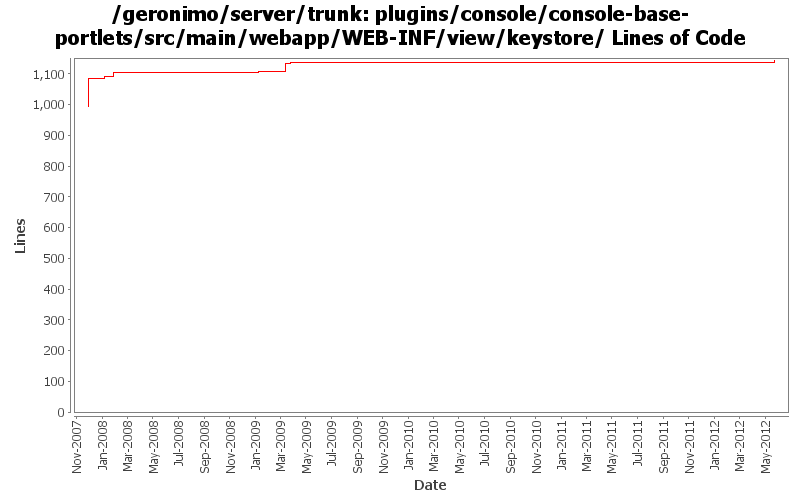

[root]/plugins/console/console-base-portlets/src/main/webapp/WEB-INF/view/keystore

| Author | Changes | Lines of Code | Lines per Change |
|---|---|---|---|
| Totals | 67 (100.0%) | 287 (100.0%) | 4.2 |
| dwoods | 49 (73.1%) | 126 (43.9%) | 2.5 |
| vamsic007 | 8 (11.9%) | 106 (36.9%) | 13.2 |
| xuhaihong | 5 (7.5%) | 37 (12.9%) | 7.4 |
| gawor | 2 (3.0%) | 7 (2.4%) | 3.5 |
| xiaming | 1 (1.5%) | 6 (2.1%) | 6.0 |
| jbohn | 2 (3.0%) | 5 (1.7%) | 2.5 |
GERONIMO-6196 Disable some functions when keystore is locked, for trunk
6 lines of code changed in 1 file:
GERONIMO-5155 Locking a keystore under "Available" results in exception (Patch from Ashish Jain)
1 lines of code changed in 1 file:
GERONIMO-4597 Validate Web Admin Console input - fixes for CVE-2008-5518, CVE-2009-0038, and CVE-2009-0039
4 lines of code changed in 1 file:
GERONIMO-4517 Apply unified message display style(G-4484) to javascript alert messages. Together with the localization of these messages. Thanks for the patch, Gang Yin
36 lines of code changed in 4 files:
part 4 of more cleanup of old forms (see Rev738104 for part 3)
1 lines of code changed in 1 file:
part 3 of more cleanup of old forms (see Rev735728 for part 2)
3 lines of code changed in 3 files:
cleanup old forms that are not using the post method - part 2 (see Rev735155 for part 1)
3 lines of code changed in 3 files:
GERONIMO-4474 Pull out the text in the JSP files to resource bundle files. Applied jsp-localization-fix.patch from Gang Yin.
5 lines of code changed in 3 files:
GERONIMO-4484 Extraction, localization and display of messages generated in portlets. Applied common-message-base.patch and common-message-core.patch from Gang Yin, with some minor updates.
10 lines of code changed in 8 files:
GERONIMO-4025 applied GERONIMO-4025-console.patch from Rex Wang.
6 lines of code changed in 1 file:
GERONIMO-4081 Accessibility issues. Applied GERONIMO-4081-console.patch from Ivan.
56 lines of code changed in 8 files:
GERONIMO-3984 Keystores portlet - Unlock keystore page shows wrong label on submit button
o Merging rev 651153 from branches\2.1
o Patched unlockKeystore.jsp and consolebase.properties.
o Can someone tell me what to do about consolebase_zh.properties?
1 lines of code changed in 1 file:
properly close anchor tag (GERONIMO-3873)
1 lines of code changed in 1 file:
One more i18n console fix. Patch from YunFeng Ma. (GERONIMO-3865)
6 lines of code changed in 1 file:
GERONIMO-3757 KeyStore type can't be changed
o Allow creation of all possible keystore types supported. Keystore type is no longer restricted to JKS.
o Added a type parameter to create keystore methods.
o Keystores portlet will now allow creating and managing all types of keystores.
o This revision will simplify the configuration changes required to run G on a JVM that does not support JKS keystores (for e.g., Harmony).
14 lines of code changed in 2 files:
GERONIMO-1775 Internationalization of the Admin Console. First patch from YunFeng.
43 lines of code changed in 23 files:
GERONIMO-3648 Keystores portlet should provide for changing keystore and key passwords
o Added changeKeystorePassword() and changeKeyPassword() methods to KeystoreInstance.
o Updated Keystores portlet to provide "Change keystore password" and "Change key password" links.
91 lines of code changed in 5 files: